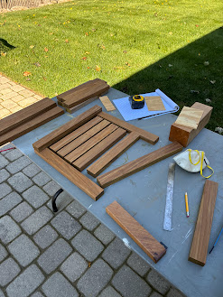
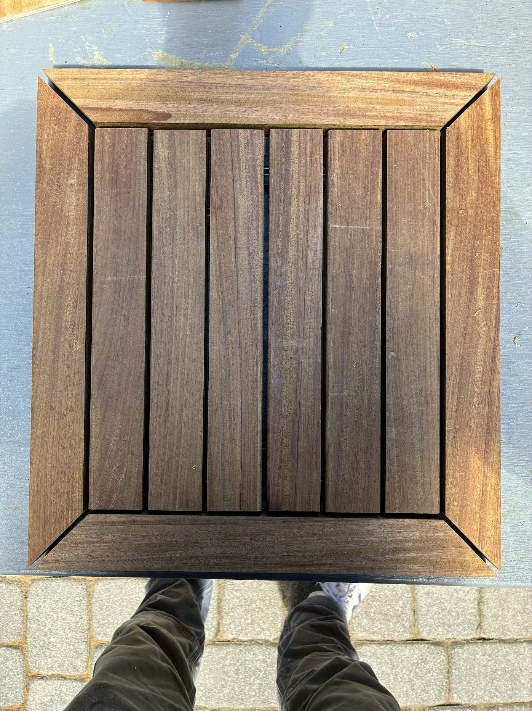
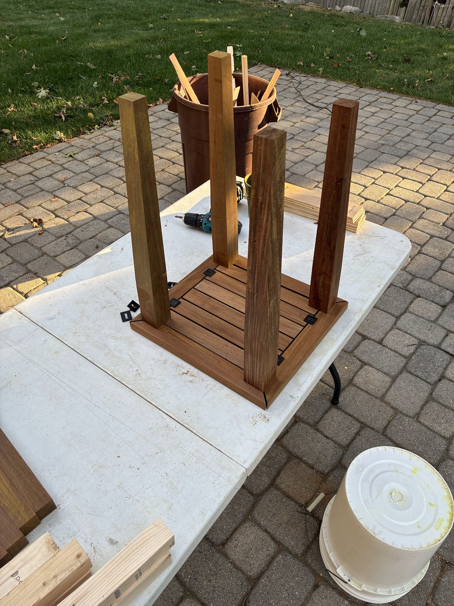
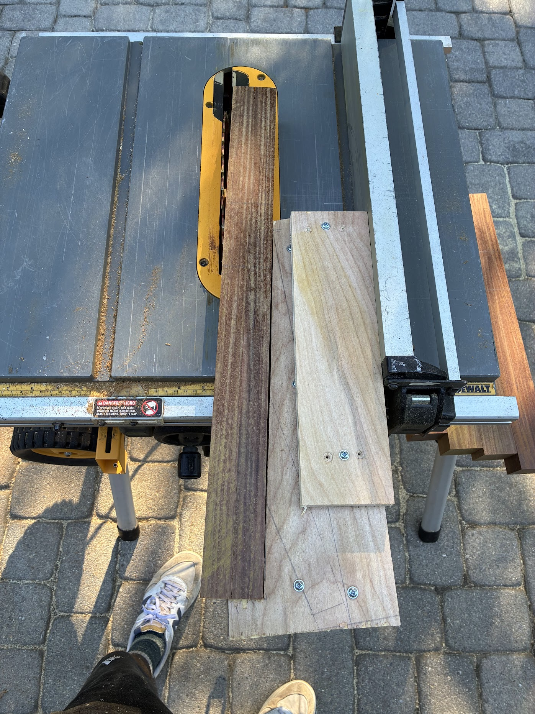
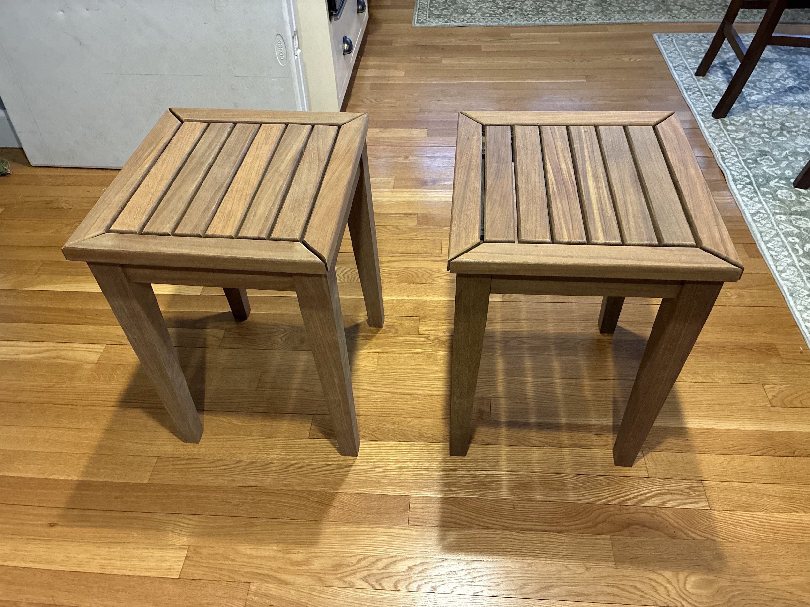

Project
IPE Tables
A table set designed around material efficiency, structural durability, and the practical realities of working with a dense hardwood.
Overview
This project was driven by a limited supply of available IPE and the challenge of developing a table design that could be built cleanly from that stock. Rather than starting with an idealized form and forcing the material to fit it, the design evolved through multiple iterations to make efficient use of what was on hand while still producing a finished piece with strong proportions and a deliberate final appearance.
Design Process
The tables were modeled and reworked in SketchUp several times in order to study dimensions, stock usage, and the relationship between the different components. Because the material quantity was fixed, each revision had to account for what lengths, widths, and layouts were realistically possible. That process became as much about material strategy as aesthetics, with the final design shaped by both visual goals and efficient use of the available lumber.
Material and Execution
IPE is an exceptionally dense and durable hardwood, which made it a strong choice for an outdoor application but also introduced added difficulty during fabrication and assembly. Its hardness required more deliberate thinking around how components would be fastened and connected, and demanded careful execution throughout the build. The final result reflects both the design constraints of the material on hand and the practical realities of building cleanly with a wood species that leaves very little room for careless work.
Gallery
Process and detail views





Design
SketchUp model and design studies
Multiple iterations were used to optimize material usage and structure.